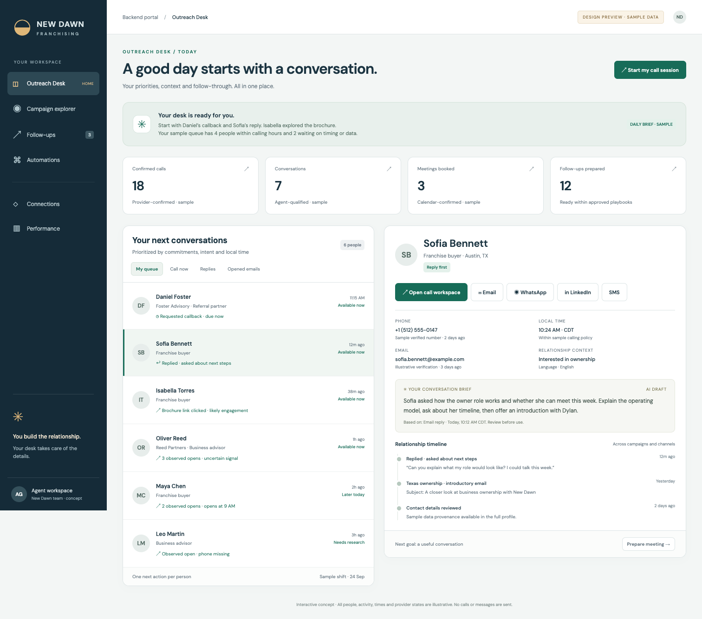
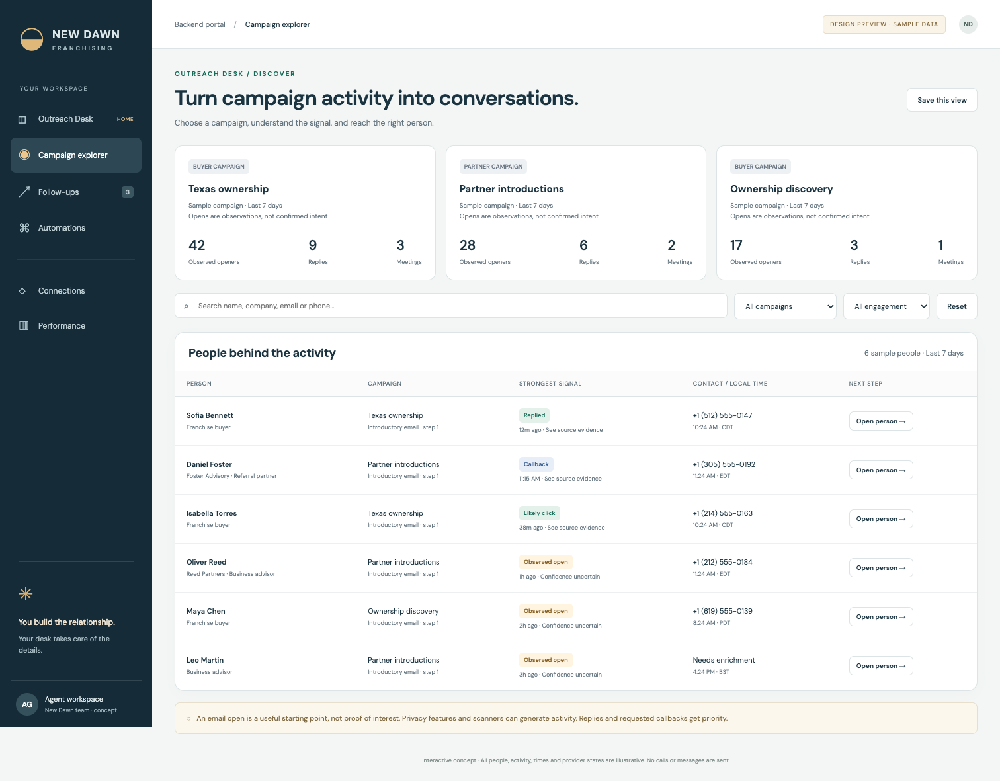
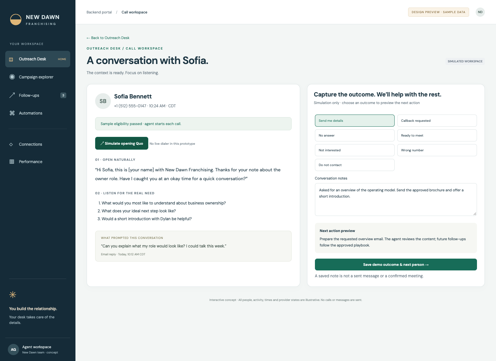
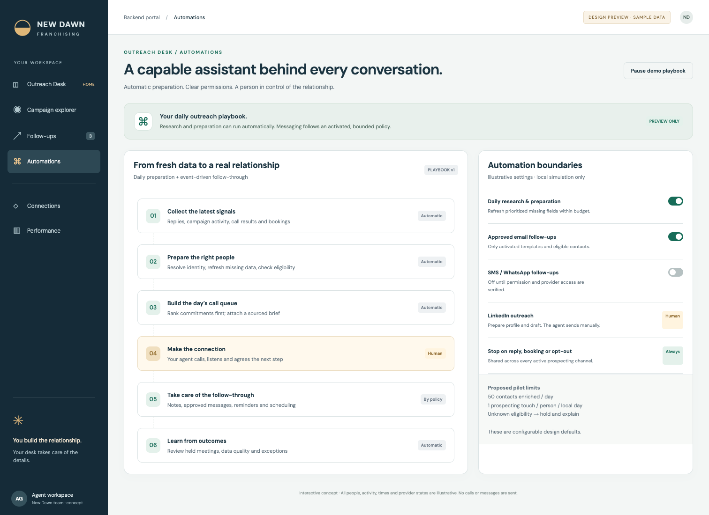
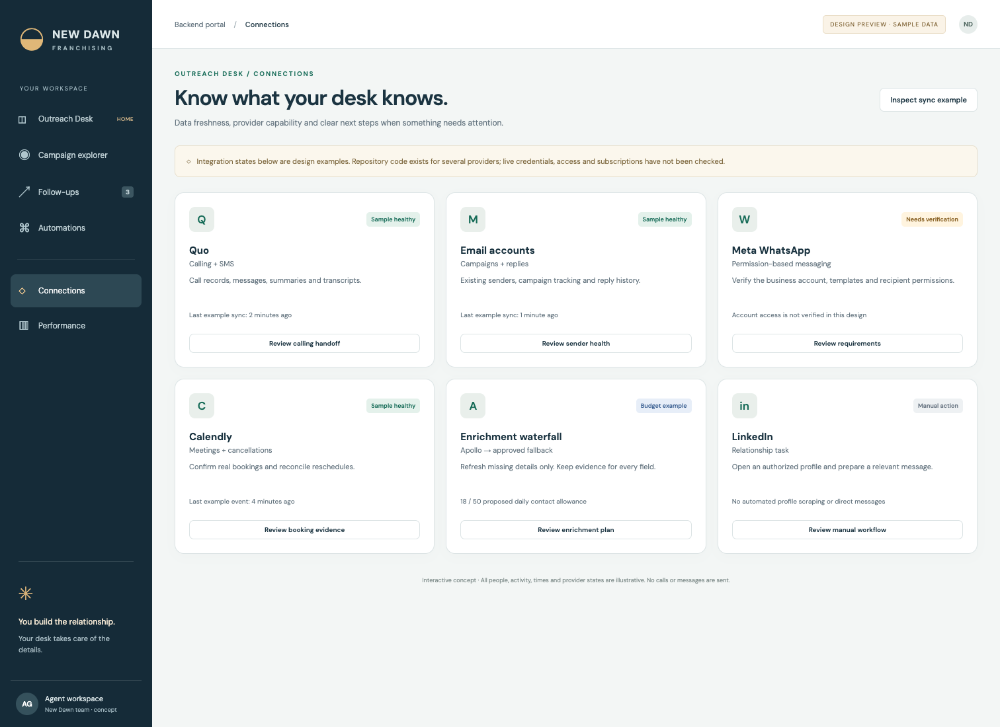
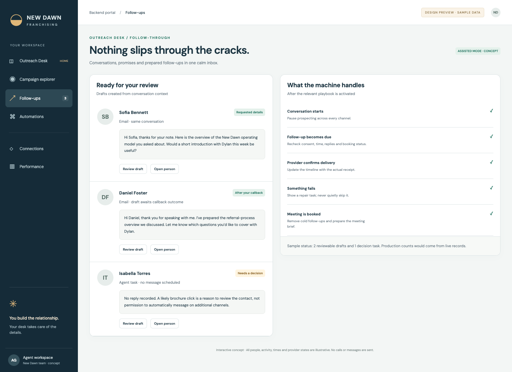
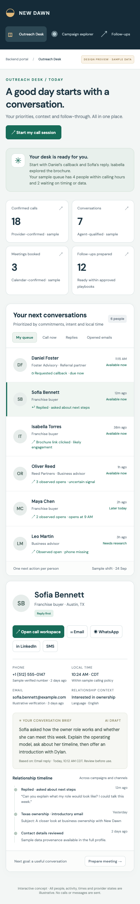
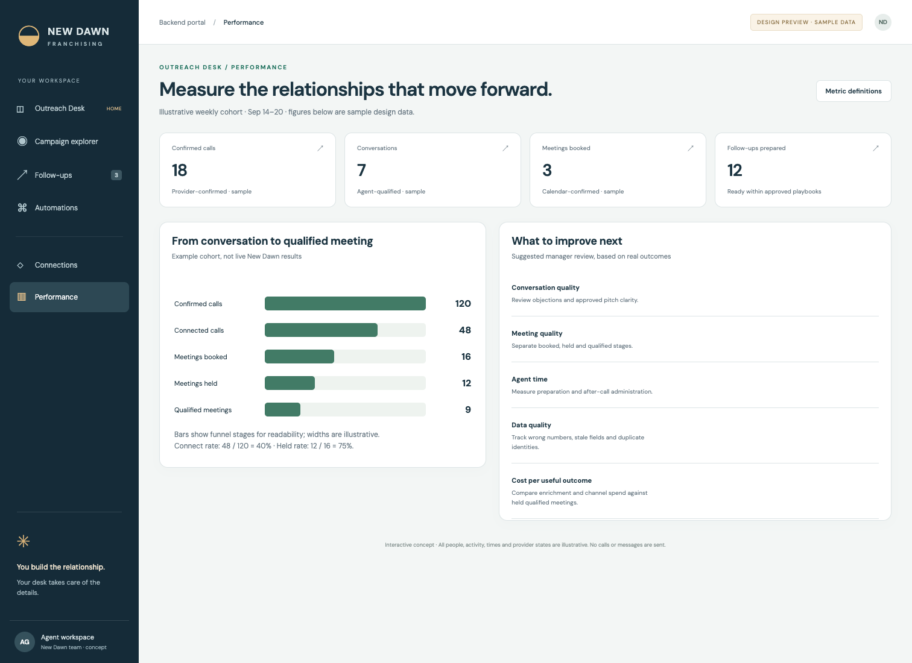

One desk. Every next conversation.
Eight rendered views of the proposed Outreach Desk. All records, metrics and integration states are sample data.
01 / The default Outreach Desk
A prioritized work queue and the context to make a useful call.

02 / Campaign explorer
Find the people behind campaign opens, clicks and replies.

03 / The call workspace
Talk track, evidence, notes and a clear next action.

04 / The automation plan
Show what the machine handles and where the agent takes over.

05 / Connections and data freshness
Provider capability, source health, permissions and recovery.

06 / Follow-through
Prepared messages and promises waiting for the next step.

07 / Mobile companion
Stacked queue and contact details at 390px width.

08 / Meaningful outcomes
Measure calls, conversations, booked meetings and qualified relationships.
